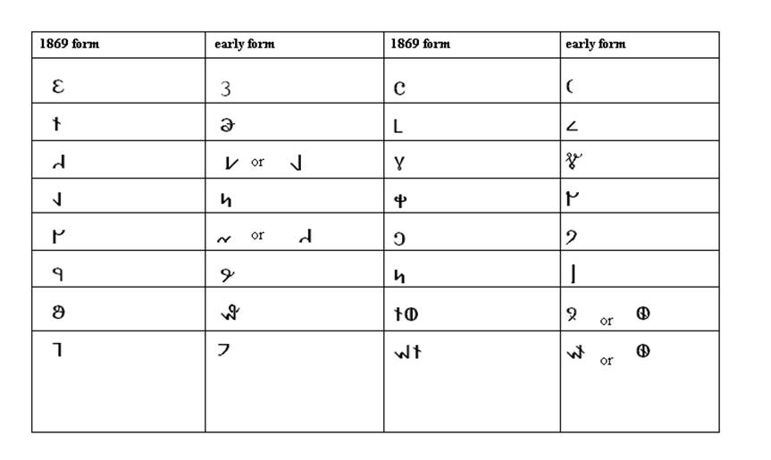

Deseret Alphabet Portal
A Complete Guide to Reading and Writing the Deseret Alphabet
By
Neil Alexander Walker
Copyright © 2005 Neil Alexander Walker
CONTENTS
Preface 6
1 An Alphabet is Born
1.1 Background 10
1.2 Birth of the Deseret Alphabet 12
2 The Structure of the Deseret Alphabet
2.1 The Sounds of English 14
2.1.1 The International Phonetic Alphabet 16
2.1.2 Practical Phonetic System 18
2.1.3 Distinction between /ç/ and /A/ 19
2.2 Deseret Alphabet Spelling Conventions 23
2.2.1 Deseret Letter Syllabic Values 24
2.2.2 Distinction between *, a and $ 25
2.2.3 Distribution of /A/ /Q/ /ç/ and /Å/
in American and British English 27
2.2.4 Distinction between /´/ and /√/ 29
2.2.5 Deseret Representation of /´/ 31
2.2.6 Rhotic and Non-Rhotic English 32
2.2.7 British /Œ/ and American /®/ 33
2.2.8 British /´/ and American /®/ 34
2.2.9 Distinguishing /Q/ /E/ and /ei/ before /®/ 35
2.2.10 Distinguishing /ju/ and /u/ after Coronal Consonants 36
2.2.11 Distinguishing /ç/ and /o/ before /®/ 37
3 Deseret Alphabet Workbook
3.1 About this Chapter 38
3.1.1 Using this Workbook 38
3.2 Deseret Alphabet Exercises 39
3.2.1 k, t, p, @ and * 39
3.2.2 g, d, b, i and $ 40
3.2.3 >, n, m, ` and u 41
3.2.4 c, s, ;, f, e and = 42
3.2.5 j, z, \, v, & and o 43
3.2.6 l, q, h, - and [ 44
3.2.7 y, x, r, w, a and ] 45
3.2.8 Digraphs hw, -r, `r, *@ and @u 46
3.3 Book of Mormon Reading Exercise 47
4 Archaic and Alternate Deseret Characters
4.1 Early Forms of Deseret Letters 49
4.1.1 Symbol for /´/ 50
4.2 Cursive Deseret Script 50
5 The Modern Deseret Alphabet
5.1 Revival of Deseret Alphabet 51
5.1.1 Objectives 52
5.1.2 How to Use this Chapter 52
5.2 Structure of the Modern Deseret Alphabet 53
5.2.1 The Letter * in the Modern Deseret Alphabet 54
5.2.2 The Names of the Letters 54
5.2.3 The Modern Deseret Alphabet Representation of /çi/ 54
5.2.4 Representation of /´/ in the Modern Deseret Alphabet 55
5.2.5 The Digraph hw 55
5.2.6 Distinguishing $ and a in Modern Deseret Spellings 55
5.3 The Exercises 56
Notes 67
PREFACE
When I was sixteen years old, my family traveled to Portland, Oregon to visit my Great Uncle Ted. While in Portland, I purchased Akira Nakanishiís book Writing Systems of the World: Alphabets, Syllabaries, Pictograms.1 The book became a constant companion for me throughout the rest of the trip. Upon return to our home in California, I read the book more closely. On page 110, toward the end of the book, I found the following entry:
#f wi r[z -rl@ @n \ m$rn@>, w
r[z. Hi r[z`z @n \ Ist. #n \
s-n-r[z, \ b-rdz big@n tu s@>
&nd b=q`z: \e sim v`r@ g &nd c
s-n @z k-m@> tu q[n -p*n \`m.
warm rez *n \ -r;. Hi q[nz
&nd -p*n \ pl&nts, &nd g@vz \`m
\er b@ut@.
MORMON SCRIPT. The writing of Mormonism
in North America. From the 19th century. (Authorís
collection)
I was shocked. I had been born and raised LDS, how could there be a ìMormon scriptî without my having heard of it? I brought the book with me to church the following Sunday and asked my teachers if they knew anything about the enigmatic symbols. Not one of them had heard of a ìMormon Scriptî before. I decided to set the mystery aside and moved the questions to the back of my mind. In the meantime, I studied several of the worldís writing systems including Arabic, Hebrew, Khmer and Georgian.
Shortly after beginning college, I obtained a copy of The Blackwell Encyclopedia of Writing Systems by Florian Coulmas.2 On page 347 I found the following (mis)information above a chart which ostensibly gave the sound values of these mysterious symbols:
Mormon alphabet A script created in the 1830s for English by Joseph Smith (1805-44), founder of the Mormon sect, who claimed that it was revealed to him in 1823 on golden plates by an angel. The characters are arbitrarily designed, although some of them resemble alphabetic letters (table 22). The script represents an attempt at designing a writing system for English which approximates a one-to-one mapping relation between sounds and symbols independent of traditional orthography.
The symbols in the chart were hand-drawn and the phonetic symbols used next to them as a key did not correspond to any accepted system3. No source was cited for the table. In other words, the entry was useless. When I tried to use the chart to decode the sample in Nakanishiís book, I found almost no correspondence between the two. It would be years before I learned that the scriptís true name was the Deseret Alphabet and that Brigham Young had commissioned it the decade after Joseph Smithís death (and it therefore had absolutely nothing to do with visions or gold plates).
About three years after returning from a mission to England, I began studying linguistics at the University of California at Berkeley. While there, I took advantage of the Bancroft library and its superb collection of early Mormon books. I will never forget the first time I held the 1869 Deseret Alphabet Book of Mormon. The book was made of fine materials and truly beautiful. As I leaved through page after page of strange characters, it struck me how much effort must have been put forth in transcribing the entire Book of Mormon text into this new script and how expensive the whole endeavor must have been for a struggling religious community. I left the experience determined to learn to read and understand the Deseret Alphabet. This book is the product of that experience.
The Purpose of this Book
This book provides all the information a student will need in order to read the classic 1869 version of the Deseret Alphabet properly and to write with it today. It also intends to dispel misinformation about the Deseret Alphabetís origin and purpose. The first chapter gives a brief overview of the origins and purpose of this peculiar Mormon script. Chapter 2 explains the reasons behind the standardized 1869 Deseret spellings and spares no details in introducing the English sound system. Chapter 3 is a complete internal workbook which reintroduces the letters and structure of the 1869 Deseret Alphabet spellings in a hands-on manner. Chapter 4 briefly introduces archaic alternate characters for advanced study. Chapter 5 gives guidelines for using the Deseret script today and proposes resurrecting the alphabet.
The more time I spend studying the Deseret Alphabet, the more I am struck by its hidden beauty and great potential. The ultimate purpose of this book is to share that feeling with the world.
What this Book is Not
This book does not pretend to give a detailed history of the origin and demise of the nineteenth-century Deseret Alphabet. Kenneth R. Beesley has already written about that in The Deseret Alphabet in Unicode.4 The history of the Deseret Alphabet deserves to be written and I look forward to seeing a full account of this remarkable script published in book form. However, I will not be the one to write such a book, as my skills are in linguistics and are not those of a historian.
Using this Book
The student needs to narrow down his goals prior to using this book. If the desire is to read the Deseret Alphabet for research purposes, then the first three chapters are all that is needed. Furthermore, the student who is not familiar with linguistics can skim over chapter 2 and go straight to chapter 3 for the quickest route to Deseret reading competency. If that course is chosen, chapter 2 should be used as a reference to chapter 3 in the event that certain spellings do not make sense. If the student desires to read and compose modern Deseret Alphabet documents, and to do it properly, he should focus on chapters 5 while referring back to chapter 2 for clarifications on English sounds.
I sincerely hope this work will inspire a new generation and help them to respect and cherish this amazing script given us by our forefathers.
CHAPTER 1
An Alphabet is Born
1.1 Background
The Church of Jesus Christ of Latter-Day Saints was founded in New York state on April 6, 1830 by the Prophet Joseph Smith. As a youth, Joseph had seen a vision of God the Father and Jesus Christ wherein he was told not to join any other church. Later, as a young man, he was visited by an angel named Moroni who told him of an ancient record on plates of gold hidden in the hill Cumorah. The record, he was told, contained an account of extinguished peoples who once inhabited the New World and their dealings with God. Years after this experience, Joseph Smith was allowed to go to the hill Cumorah and obtain the plates of gold. The Prophet labored for weeks and translated the record by the gift and power of God. The translation, published in Palmyra, New York in 1830, was entitled The Book of Mormon.
The remarkable story of Joseph Smith and his strange new book of scripture attracted a great deal of interest and many converts. They also attracted enemies. By the 1840s, Joseph Smith and the members of the church he had founded had been driven across the American states of New York, Ohio, and Missouri to the swampy shores of the Mississippi in Illinois.
Along the great river, the Mormons, as the members of the Church had come to be known because of their belief in the Book of Mormon, erected a city of brick and stone they named Nauvoo (based on a Hebrew word meaning beautiful). Nauvoo had a population of thousands and became one of the most important cities in Illinois. The Mormons built a beautiful temple of carved stone atop a hill and had farms and businesses. The Prophetís beautiful city was not to last. Angry and jealous neighbors organized themselves into mobs and began to attack the Mormons. Eventually, Joseph Smith and his brother, Hyrum, were brutally killed in Carthage jail while awaiting trial on false charges. With the prophetís death, The Church of Jesus Christ of Latter-Day Saints was expected to dissolve.1
Rather than dissolve, the church continued to grow. Before his martyrdom, the Prophet had organized a quorum of twelve apostles. Brigham Young was the president of this quorum and took control of the church. President Young realized that its persecutors would not allow the church to continue in Illinois or anywhere frequented by others. He led the main body of the church on a long and difficult journey of over 1,000 miles across the Great Plains and the Rocky Mountains to the Great Basin in what is now Salt Lake City, Utah. Once established, Brigham Young sent groups of Mormon settlers throughout the west to strengthen the churchís presence in the region. Eventually, President Young would personally order the establishment of more than 350 settlements from San Bernardino, California to Idaho.2
The LDS settlements were organized according to a pattern first set out by the Prophet Joseph Smith. Each town was to have streets laid out in a grid with a space set aside for a temple in the center. The Mormons supported themselves in the arid lands through the use of irrigation and hard work.3
At first, this collection of desert lands and small Mormon settlements was named the Territory of Deseret. President Young ruled Deseret as something of a theocracy for a time before congress rejected it as a territory and created the smaller territory of Utah (with Young as governor).4
1.2 Birth of the Deseret Alphabet
It was amid this unique social experiment that Brigham Young and his closest associates decided to create and promulgate a new alphabet for English. George D. Watt, the first English convert to the LDS church, had been a student of Pitman shorthand in his native England. He thus had a good understanding of the individual sounds (the phonemes) of spoken English. President Young chose him together with other leading churchmen to design a completely new alphabet for English which would have a letter for every single sound of the language. The alphabet went through many versions and revisions between 1854 and its eventual abandonment in the 1870s.5 The total number of letters changed as did their shape. At first, the so-called short vowels were to be smaller than the other letters. Early examples of the Deseret Alphabet show it to be very fluid and appropriate for cursive script. Eventually, the Regents of the University of Deseret (now the University of Utah), who were responsible for promulgating the script, created a standard version with 38 letters. This version was used in four books: two reading primers (The Deseret First Book and The Deseret Second Book), a selection from the Book of Mormon (The Book of Nephi) and The Book of Mormon in its entirety. In addition to the four printed books, less polished versions of the alphabet were used on some gravestones, store signs, a gold coin issued by Young for use in the territory, in over 70 newspaper articles in the Deseret News (mainly scripture quotations) and in numerous personal journals (including a journal from a mission to the Hopi Indians).6
Contrary to the assumptions of outside critics, who have claimed that this alphabet was intended to cloak LDS writings from Gentile view and further isolate the Mormons in their mountain retreats, the Deseret Alphabet was intended solely to ease the burden imposed upon students learning to read and write English.7 Thousands of new converts were pouring into Deseret for whom English was a new language. A new alphabet with better sound to symbol correspondence could only help these new members learn the English language.
Observers at the time recognized that the new alphabet was in the same tradition as those of Pitman in England. Far from being an attempt to hide things, every appearance of the alphabet in print came with an accompanying table of letter values for all to see. Unfortunately, the members of the LDS church never fully accepted the new alphabet. Reasons given for the alphabetís failure include the oppressive cost of reprinting extant literature into a new script for an impoverished people and the esthetically poor shapes of the letters. In particular, the final version of the Deseret Alphabet has been criticized for lacking ascenders and descenders (letters which rise above or fall below the line like b and p). By the time of Brigham Youngís death in 1877, the Deseret Alphabet had been abandoned.8
All told, the LDS church spent thousands of dollars (at 19th century prices) and man-hours trying to create and implement a new alphabet. Nevertheless, a new alphabet was created. The script has survived despite its failure as a practical medium of written communication. Brigham Youngís Deseret Alphabet exists in the 21st century mainly as a historic curiosity for descendants of early Mormon pioneers and language aficionados. Recently the script has been included in Unicode and some internet sites. Interest in the script continues today and might be greater now than when it was actually in use in the nineteenth century.9
CHAPTER 2
The Structure of the Deseret Alphabet
2.1 The Sounds of English
There have been occasional attempts to make use of the Deseret Alphabet in recent years. The efforts, though commendable, have suffered from a complete misunderstanding of the scriptís structure. Part of the problem stems from the poor fit between sound and symbol in current English spelling which many would-be Deseret Alphabet users transfer to the script. The largest source of difficulty; however, comes from ignorance of different types of English pronunciation. In order to understand how to read and write in the Deseret alphabet one must pay very close attention to the information given about pronunciation differences.
Beyond these considerations, the Deseret Alphabet did not differ drastically in its premise from traditional English orthography. Both systems attempt to represent individual phonemes (speech sounds) with individual letters. The Deseret Alphabet comes much closer to this ideal than traditional English orthography which has far fewer letters than there are English sounds.
For example, in English there is a single sound, /k/ (letters between slashes indicate phonemes), which is represented by the letters c, k∏ q, ck, ch, kk and kh in traditional English spelling, as in the words cot, kid, quick, school, trekker and khaki. This state of confusion holds true for most English sounds. A related problem is the existence of multiple sound correspondences for one letter. For example, the digraph (two-letter combination) ch can be sounded in at least four ways as in church, chorus, champagne and yacht. As a result of this convoluted fit between sound and symbol, an English schoolchild must learn that /k/ can be spelled in no less than seven ways, five of them quite common, and that the letters ch can represent at least for sounds (or lack of sound). In stark contrast to the confusing situation of traditional English spelling, the Deseret Alphabet uses only one letter for the /k/ sound and has no letter with multiple sounds attached to it.
It is necessary to learn something about the articulation of English sounds and how they differ from speaker to speaker over time in order to understand classic Deseret spellings like those used in the Deseret Alphabet edition of the Book of Mormon. English, like all languages, is communicated through the arrangement of various individual sounds into various combinations to form words. All languages, including English, have a finite number of distinct sounds.
Standard English has around forty distinct sounds depending on the accent. Some varieties of English have more distinct sounds than others. American English, as spoken in the Southeast and Northeast of the United States, has more distinct sounds than Canadian and Western American English. Because the creators and promulgators of the Deseret Alphabet were from the Northeast, they chose a standard pronunciation very different from what one now finds in Utah and other western states. This has made it difficult for Utahans and other Westerners interested in the Deseret Alphabet to use and understand the script correctly. To avoid further confusion, and to aid in teaching the relationship of English sounds to one another, the International Phonetic Alphabet will be used in describing the sounds of English as represented by the Deseret Alphabet throughout this book.
2.1.1 The International Phonetic Alphabet
The International Phonetic Alphabet (hereafter IPA) is a set of symbols used by the majority of linguists to represent every sound of the worldís languages. Each symbol represents a single sound and each sound is represented by a single symbol (or digraph). It is customary to enclose phonemes (distinct sounds) in / /. (Phonetic transcriptions are enclosed in [ ], but this is beyond the scope of this book.)
Table 1 lists all of the sounds of English using the IPA and example words written in regular orthography. It is important to notice that how words are spoken and how they are written differ wildly in regular English. Do not be too worried about memorizing all of these new symbols. All that matters is that the concept of one symbol for one sound be mastered. The examples below can always be consulted, but they are of no use if their premise is misunderstood.
As can be seen from Table 1, the symbols of the IPA differ somewhat in their values from the letters of the regular English alphabet. Notice, for instance, that the IPA /i/ sounds like ee as in see not as in sit. Also, it is important to notice new symbols representing sounds for which English currently has no letters. For example, the IPA uses the symbol /T/ for the sound spelled th in English in words like thigh, thin, ether, author, teeth, sheath. This is a single sound, not a combination of two different sounds. English th actually represents another sound as well. Say the words thy, then, either, other, teethe, sheathe aloud and then read the first set of words given as examples for /T/. The
Table 1: English phonemes using the IPA
|
IPA SYMBOL |
TRADITIONAL LETTERS USED |
EXAMPLE WORD |
|
/h/ |
H, h, wh |
Help, ahead, who |
|
/k/ |
K, k, C, c, ck, ch, kk, kh, Q, q, qu |
Kid, chaos, kick, mosquito, khaki |
|
/g/ |
G, g |
Go, big |
|
/N/ |
ng, n |
singer, thing, finger |
|
/j/ |
Y, y |
You, lawyer |
|
/tS/ |
Ch, ch, tch, tu, tsch |
Church, witch, nature, Deutsch |
|
/dZ/ |
J,j G, g, dge, du |
Judge, gem, procedure |
|
/S/ |
Sh, sh, Ch, ch, sch, ti, si |
Ship, chic, Schuller, nation, mansion |
|
/Z/ |
J, j, G, g, si, zi, zh, ge |
Jacques, genre, vision, Frazier, beige |
|
/t/ |
T, t, tw |
Too, to, two |
|
/d/ |
D, d |
Do, dog |
|
/n/ |
N, n, kn, gn |
No, new, knew, gnu |
|
/s/ |
S, s, ss, C, ce, z |
Source, sissy, citizen |
|
/z/ |
Z, z, X, x, s |
Zoo, Xerox, rise |
|
/®/ |
R, r, l |
Rare, colonel |
|
/l/ |
L, l |
Lull |
|
/T/ |
Th, th, chth, gh |
Thigh, breath, chthonic, Keighley |
|
/D/ |
Th, th, the |
Thy, breathe |
|
/p/ |
P, p |
Pop |
|
/b/ |
B, b |
Bob |
|
/m/ |
M, m |
Mum |
|
/f/ |
F, f, ff, Ph, ph, gh, Pf |
Fifth, stiff, phone, enough, Pfeiffer |
|
/v/ |
V, v, f |
Very, brave, of |
|
/hw/ |
Wh, wh |
What, awhile |
|
/w/ |
W, w, o |
Want, away, one |
|
/i/ |
E, e, ee, ea, ei, ie, i, y |
E, be, see, leaf, thief |
|
/I/ |
I, i |
It, hit |
|
/ei/ |
A, a, ai, ay, ey, eig, |
A, ate, faith, hay, they, reign |
|
/E/ |
E, e, ea, a, ai |
Ed, met, death, many, again |
|
/Q/ |
A, a, al |
At, hat, salmon |
|
/ai/ |
I, i, y, ye |
I, ice, thy, dye |
|
/A/ |
O, o, a, |
Odd, hot, what, far |
|
/ç/ |
A, a, aw, au, augh, ough, o |
All, want, saw, thought, caught, or |
|
/o/ |
O, o, oa, oe, ow |
O, go, oat, roe, mow, more |
|
/U/ |
u, oo |
put, soot |
|
/u/ |
oo, o |
too, to |
|
/√/ |
U, u |
Under, fun |
|
/aU/ |
Ou, ou, ow |
Out, foul, now |
|
/´/ |
A,a, e, i, o, u |
About, sofa, enough, rectify, reunion |
|
/çi/ |
Oi, oi, oy |
Oil, coin, toy |
second set of words, though spelled with th just like the first, actually contains a different sound represented in the IPA with the symbol /D/. These two English phonemes, /T/ and /D/, are both pronounced by placing the tip of the tongue between the teeth. They differ only in one respect; the phoneme /T/ is voiceless whereas /D/ is voiced. Voiceless sounds
articulated with the vocal folds drawn close together. When the vocal folds are apart, the resultant sound is hissed or whispered. When the folds are drawn together, it creates something of a buzzing sound. Say breath and breathe aloud. Notice how the th in breath sounds hushed compared to the th in breathe. The th in breath is voiceless and the th in breathe is voiced. In the IPA, these two words could be written as /brET/ and /briD/. This same relationship, that of voiceless to voiced consonant, is also true of the pairs /f/ f and /v/ v, /p/ p and /b/ b, /s/ s and /z/ z, /t/ t and /d/ d, /tS/ ch and /dZ/ j, /S/ sh and /Z/ zh (as in vision), /k/ k and /g/ g. Each of these pairs is articulated at the same point in the mouth in the same manner save for the position of the vocal folds. The concept of voiced versus voiceless consonants is not critical to understanding the Deseret Alphabet; however, it does play a small role in the canonical ordering of the script.
2.1.2 Practical Phonetic System
It is not necessary to learn the IPA in order to learn the Deseret Alphabet; however, it is necessary to learn to distinguish between each sound of English. Henceforth the IPA, together with a less accurate but more familiar practical system, will be used to explain the sounds of English as represented by the Deseret Alphabet. Table 2 displays the equivalencies between the IPA and the practical system.
Table 2: IPA and its equivalents in the practical system
|
h |
k |
g |
N |
j |
tS |
dZ |
S |
Z |
t |
d |
n |
s |
z |
® |
l |
T |
D |
p |
b |
|
h |
k |
g |
ng |
y |
ch |
j |
sh |
zh |
t |
d |
n |
s |
z |
r |
l |
th |
dh |
p |
b |
|
m |
f |
v |
hw |
w |
i |
I |
ei |
E |
Q |
ai |
A |
ç |
o |
U |
u |
√ |
aU |
´ |
çi |
|
m |
f |
v |
wh |
w |
ee |
ih |
ey |
eh |
a |
ie |
ah |
aw |
oh |
OO |
oo |
u |
ou |
uh |
oy |
Table 3 lists twenty-four English words in traditional orthography, the IPA and the practical system. One should at least learn the practical system (and how to refer back to its IPA equivalents) before moving on to descriptions of the Deseret Alphabet.
Table 3: English words in regular spelling, IPA and the practical system
|
1. head /hEd/ hehd 2. king /kIN/ kihng 3. gone /gçn/ gawn 4. you /ju/ yoo 5. cheap /tSip/ cheep 6. job /dZAb/ jahb 7. show /So/ shoh 8. beige /beiZ/ beyzh 9. rise /raiz/ riez 10. thick /TIk/ thihk 11. them /DEm/ dhehm 12. why /hwai/ whie 13. eat /it/ eet 14. fit /fIt/ fiht 15. faith /feiT/ feyth 16. left /lEft/ lehft 17. cat /kQt/ kat 18. not /nAt/ naht 19. nought /nçt/ nawt 20. vote /vot/ voht 21. food /fud/ food 22. foot /fUt/ fOOt 23. son /s√n/ sun 24. sofa /sof´/ sofuh
|
2.1.3 Distinction between /ç/ and /A/
At this point, some readers might be feeling overwhelmed by the variety of new symbols. Additionally, some might not recognize the distinctions that have been drawn between certain sounds. Due to dialectal differences, and the inadequacies of conventional English spelling, many English speakers are unaware of the sounds of (so-called) Standard American English. Table 3 lists a pair of words, not and nought, which are pronounced differently in Standard American English (as spoken by newscasters, southerners and many in the northeast) but sounded the same in Canada and most of the American west. The vowel sound in not is represented by /A/ (ah in the practical system) whereas the vowel sound in nought is represented by /ç/ (aw in the practical system). For speakers from Utah and elsewhere in the West (as well as many other states), these words sound the same; however, for the majority of English speakers in the world these two vowel sounds are as different as the /i/ ee and /ei/ ey in see and they.1 The Deseret Alphabet had a separate letter for each of these two vowels and both vowels were consistently distinguished in the books printed in Deseret characters. Table 4 gives examples of words with both /A/ ah and /ç/ aw. Speakers who are not familiar with this sound contrast should pay special attention.
Table 4: /A/ ah versus /ç/ aw
|
Words with /A/ ah |
Words with /ç/ aw |
|
Hot /hAt/ haht Not /nAt/ naht Lot /lAt/ laht Rock /®Ak/ rahk Wok /wAk/ wahk Sock /sAk/ sahk Tot /tAt/ taht Hop /hAp/ hahp |
Hall /hçl/ hawl Nought /nçt/ nawt Laud /lçd/ lawd Raw /rç/ raw Walk /wçk/ wawk Saw /sç/ saw Taught /tçt/ tawt Hawk /hçk/ hawk |
Finally, before introducing each letter of the Deseret Alphabet and its sound value, try to complete the two exercises below. Exercise 1 focuses on IPA understanding. Only the IPA symbols and values used in this book are used. Exercise 2 deals with the practical system already introduced. Both exercises are designed to teach a beginning student with no background in linguistics how to segment the sounds of English. It is vital that the learner become familiar with at least one system before moving on to the description of the Deseret Alphabet.
|
Exercise 1: IPA practice Try to read the words written in IPA then rewrite them in standard English spelling. Refer back to Table 1 if in doubt about a symbol. Remember, it is better to learn slowly and accurately than to rush through without understanding the material! Example: /fQt/ fat≠≠≠ /Tçt/ thought 1. /hElp/ ________ 2. /kAt/ ________ 3. /gçn/ ________ 4. /sIN/ ________ 5. /juz/ ________ 6. /tSip/ ________ 7. /tSIp/ ________ 8. /dZ√dZ/ ________ 9. /SAp/ ________ 10. /fIS/ ________ 11. /eiZ´n/ ________ 12. /vIZ´n/ ________ 13. /tu/ ________ 14. /dId/ ________ 15. /nain/ ________ 16. /sçt/ ________ 17. /zIp/ ________ 18. /lIk/ ________ 19. /®At/ ________ 20. /®çt/ ________ 21. /Tai/ ________ 22. /b®ET/ ________ 23. /Dai/ ________ 24. /TIN/ ________ 25. /pQk/ ________ 26. /b®IN/ ________ 27. /mQn/ ________ 28. /fçl/ ________ 29. /vQt/ ________ 30. /hwEn/ ________ |
|
Exercise 2: Practical System practice Write the following English words in the practical system. Remember, if in doubt, to refer back to the previous examples. Example: talk tawk block blahk 1. hat ________ 2. kick ________ 3. God ________ 4. long ________ 5. ewe ________ 6. chip ________ 7. jab ________ 8. shoot ________ 9. vision ________ 10. two ________ 11. dough ________ 12. knight ________ 13. night ________ 14. sock ________ 15. zip ________ 16. rope ________ 17. load ________ 18. thumb ________ 19. that ________ 20. death ________ 21. seethe ________ 22. smooth ________ 23. path ________ 24. breathe ________ 25. moth ________ 26. witch ________ 27. which ________ 28. fight ________ 29. of ________ 30. caught ________ 31. leaf ________ 32. say ________ 33. far ________ 34. saw ________ 35. so ________ 36. to ________ 37. sit ________ 38. met ________ 39. that ________ 40. not ________ 41. son ________ 42. book ________ 43. kite ________ 44. cow ________ 45. coil ________ |
2.2 Deseret Alphabet Spelling Conventions
This section describes the structure of the Deseret Alphabet in its final, classic form as used in the 1869 printing of the Book of Mormon. Table 5 gives all thirty-eight letters of the Deseret Alphabet as used in 1869 together with their names and values in IPA and the practical system. Each letter is numbered to show the correct order of the alphabet.2
Table 5: Deseret Alphabet with letter names in the IPA and practical system
|
Deseret Letters 1-18 |
IPA Name Value |
Practical System Name Value |
Deseret Letters 19-38 |
IPA Name Value |
Practical System Name Value |
|
I |
/i/ /i/ |
ee ee |
T |
/ti/ /t/ |
tee t |
|
E |
/ei/ /ei/ |
ey ey |
D |
/di/ /d/ |
dee d |
|
A |
/A/ /A/ |
ah ah |
C |
/tSi/ /tS/ |
chee ch |
|
% |
/ç/ /ç/ |
aw aw |
J |
/dZi/ /dZ/ |
jee j |
|
O |
/o/ /o/ |
oh oh |
K |
/kei/ /k/ |
key k |
|
U |
/u/ /u/ |
oo oo |
G |
/gei/ /g/ |
gey g |
|
# |
/I/ |
ih |
F |
/Ef/ /f/ |
ehf f |
|
~ |
/E/ |
eh |
V |
/vi/ /v/ |
vee v |
|
^ |
/Q/ /Q/ |
a a |
: |
/ET/ /T/ |
ehth th |
|
/ |
/Å/ |
o |
| |
/Di/ /D/ |
dhee dh |
|
_ |
/√/ /√/ |
u u |
S |
/Es/ /s/ |
ehs s |
|
+ |
/U/ |
OO |
Z |
/zi/ /z/ |
zee z |
|
{ |
/ai/ /ai/ |
ie ie |
Q |
/ES/ /S/ |
ehsh sh |
|
} |
/aU/ /aU/ |
ou ou |
X |
/Zi/ /Z/ |
zhee zh |
|
W |
/wu/ /w/ |
woo w |
R |
/Œ®/ /®/ |
ur r |
|
Y |
/ji/ /j/ |
yee y |
L |
/El/ /l/ |
ehl l |
|
H |
/h/ |
h |
M |
/Em/ /m/ |
ehm m |
|
P |
/pi/ /p/ |
pee p |
N |
/En/ /n/ |
ehn n |
|
B |
/bi/ /b/ |
bee b |
< |
/EN/ /N/ |
ehng ng |
2.2.1 Deseret Letter Syllabic Values
Each letter of the Deseret Alphabet had a name except, perhaps, the short vowels @ ` * = and the consonant h. Each consonant symbol had a specific name of one syllable. It is very important to know the name of each consonant. When a consonant symbol appears in isolation, it is to be read as its full name. Thus, the letter b stands for /b/ in combination with other letters as in b@g /bIg/ big. However, if b stands alone in a sentence it is to be read with its full name as /bi/ bee as in b hir tun[t /bi hir tunait/ be here tonight. In older versions of the Deseret Alphabet, this feature was true within words as well. An 1860 gold piece minted by Brigham Young for distribution in the territory had an inscription in the Deseret Alphabet which read hol@ns tu \ l$rd Holiness to the Lord where the first word, Holiness, is spelled h-o-l-ih-n-(eh)s with the letter s being read as /Es/.3 Thankfully, the 1869 version only uses the names of the letters as their value in monosyllabic words. In fact, only the letters a y b \ g, standing for the words a, ye, be, the, gay are commonly used in the printed Deseret Alphabet books. Exercise 3 offers practice.
|
Exercise 3: Deseret Alphabet Practice Transcribe the following sentences from Deseret characters into traditional English spelling. Keep an eye out for syllabic letter values!
Example: Me \@s b a g=d yir May this be a good year 1. B y \erfor p-rf`kt. ____________________ 2. P=t d]n \&t g-n! ____________________ 3. A g b-rd s&> tu h@m. ____________________ 4. { t`l \ \@s f$r \[n on g=d. ____________________ 5. { told h@m qi w=d b let. ____________________
Write the following words using Deseret letters. Example: be b 6. ye __________ 7. gay __________ 8. the __________ 9. a __________ 10. thee __________ |
2.2.2 Distinction between *, a and $
A great deal of detail concerning English sounds has been omitted up to this point to ease the burden of coping with too much new information. However, before going further, it is necessary to delve deeper into the nuances of English sounds and dialectal differences. Table 5 has one Deseret character which represents a sound that has not been mentioned yet. This character, *, is represented as /Å/ in the IPA and o in the practical system. This sound is found in British pronunciations of the words not, got, Tom, off and what. It is not a sound of Standard American English.4 In England, where this is a common sound, the sole difference between the words pot, port and part is the nature of the vowel because /®/ is not pronounced after a vowel in British English. These three words, in an English accent, can be written as /pÅt/, /pçt/ and /pAt/ in the IPA. In Standard American English, the same three words can be written as /pAt/, /pçrt/ and /pArt/. The situation between /Å/ and /A/ is not the same as that between /ç/ and /A/. There is not a single word in American English that has become homophonous with another because American English lacks the sound /Å/. This is true because, unlike in British English, American English speakers pronounce /®/ in all positions. Compare this to the situation with /ç/ where those dialects of American English which have lost the sound now have a large number of homophonous words.
In some dialects of American English, spoken in parts of New England and Virginia, these three words, pot, port and part, could be written as /pAt/, /pçt/ and /pat/ in the IPA. The creator of the Deseret Alphabet was an Englishman who no doubt sounded the letter * as /Å/. Nevertheless, the pronunciation style chosen was not an English one; rather, it seems to have been based along the lines of a New England standard such as would have been familiar to Brigham Young and Noah Webster. If this is the case, then perhaps a and * would be more appropriately transcribed as /a/ and /A/ rather than /A/ and /Å/. In this book, however, the current American standard will be used.5
Table 6 gives example words containing these vowels together with their British, Standard American and Western American (Utahan) pronunciations written in the IPA.
Table 6: Words with a, * and $ with IPA transcriptions
|
Deseret Letters " |
a |
* |
$ |
IPA Transcription of cot, cart, caught, court |
|
British Accent |
/A/ |
/Å/ |
/ç/ |
/kÅt/ /kAt/ /kçt/ /kçt/* |
|
Standard American |
/A/ |
/A/ |
/ç/ |
/kAt/ /kA®t/ /kçt/ /kç®t/ |
|
Western American (Canadian) |
/A/ |
/A/ |
/A/ |
/kAt/ /kA®t/ /kAt/ /kç®t/ |
* homophonous pairs are in bold
2.2.3 Distribution of /A/ /Q/ /ç/ and /Å/ in American and British English
As can be seen in Table 6, though British English has an extra vowel sound, Standard American English is the only one without any homophonous pairs. In fact, were in not for one other dialectal quirk, the creators of the Deseret Alphabet might not have bothered with creating the letter * in the first place. Historically, the vowel in words like last, path and ask had the same vowel as in lack, pat and at. In England, the vowel in these words shifted to become like the sound in lark, part and art. In most of America, outside of coastal Virginia and parts of New England, the older pronunciation remained. The creators of the Deseret Alphabet were from England and New England. The speech style they chose included the shift of /Q/ a to /A/ ah in these words. Consequently, familiar Book of Mormon phrases like ìand it came to passî are sounded out as and it came to pahss. The same dialects that underwent this change also experienced another one. Words like often, soft and lost were traditionally pronounced with an /ç/ aw vowel. In England, these words have changed the vowel from /ç/ aw to /Å/ o. In British English, because of these changes, the only difference between the words last and lost is the distinction between /A/ ah and /Å/ o. In American English, this distinction is unnecessary because words like last retain the older /Q/ a vowel and words like lost retain the older /ç/ aw vowel. Thus, solely because they chose a speech style which had undergone these changes, the designers of the Deseret Alphabet were obliged to include the letter * in their spellings. In this book, and for all practical purposes, this letter should be treated as just another way to spell /A/ ah. However, British and Australian readers should keep the original pronunciation of this letter in mind.6
Table 7 gives examples of English words that are pronounced differently in England and America. Each word is given in traditional orthography, IPA, the practical system and the Deseret Alphabet as used in the publication of the Book of Mormon. The table makes clear how important the distinction between /ç/ and /Å/ is for British English and how unnecessary it is for Standard American English.
Table 7: Words which differ between England and America in pronunciation
|
Traditional Orthography |
orphan |
often |
lost |
last |
off |
|
Deseret Alphabet |
$rf`n |
*fn |
l*st |
last |
*f |
|
Standard American |
/ç®f´n/ awrfuhn |
/çf´n/ awfuhn |
/lçst/ lawst |
/lQst/ last |
/çf/ awf |
|
Western American (Canadian) |
/ç®f´n/ awrfuhn |
/Af´n/ ahfuhn |
/lAst/ lahst |
/lQst/ last |
/Af/ ahf |
|
British English |
/çf´n/ awfuhn |
/Åf´n/ ofuhn |
/lÅst/ lost |
/lAst/ lahst |
/Åf/ of |
2.2.4 Distinction between /´/ and /√/
Astute readers will have already noticed another unexpected feature of the Deseret Alphabet, namely, it does not have a symbol for the vowel /´/ uh as in sofa. This vowel, often called the schwa or reduced vowel, is the commonest vowel sound in the English language. It is, at the same time, one of the most problematic ones. It is possible that the creators of the Deseret Alphabet left out a /´/ uh symbol through mistake or misjudgment. It is also possible that they avoided creating a symbol for the unreduced vowel in order to avoid deciding when it was present and when it was not. Many words with a schwa in normal speech have a fuller vowel in careful pronunciation. One can pronounce the word pronounce as /p®´naUns/ pruhnouns or as /p®onaUns/ prohnouns. Which pronunciation is more correct? The first (with a schwa) is more natural but the second is perfectly acceptable in a formal setting (and writing is necessarily formal). The problem with the reduced vowel extends beyond matters of formality. The schwa is yet another vowel that is different things to different people based upon their dialect of English. In most of the United States (especially the West), the sound of a schwa in the word sofa /sof´/ sohfuh is identical to the sound of the vowel /√/ u in the word fun /f√n/ fun. This causes considerable confusion for Americans trying to understand Deseret spellings. The same speakers who merge /√/ u and /´/ uh have an additional pronunciation peculiarity. For these speakers, the phoneme /´/ uh has two allophones (variant realizations of what is, underlyingly, a single sound): /´/ uh at the beginning and end of a syllable and /I/ ih in a closed syllable (one that begins and ends with consonants). (Phonetically this second sound is really more like the high central unrounded vowel [ˆ]; however, native speakers are more likely to analyze it as /I/ ih when sounding words out.) The concept of phonemes and allophones is too complicated for this book. Suffice it say that the reduced vowel, at least for most Americans, is a difficult vowel to pin down.
In Britain, Australia, New Zealand and some parts of America the sound of schwa in a word like sofa and the sound of the vowel in a word like but are very different. In northern England the /√/ u sound in but sounds more like the /U/ OO of American English book. In Southern England the sound of /√/ u in but sounds more like a Chicago pronunciation of not. For these reasons, the choice of the symbol /√/ is somewhat arbitrary. British linguists favor the symbol /Œ/ for this sound because it reflects Southern British English more accurately. This book uses /√/ because it is a more appropriate placeholder for a World English sound. The Deseret Alphabet uses the symbol - expressly for /√/ u and not for /´/ uh (the minor exceptions to this rule will be discussed later). It is important that Americans do not attempt to use - for schwa. Table 8 displays a sample of words with schwa or /√/ u and their spellings in the Deseret Alphabet together with variant regional pronunciations.7
Table 8: Examples of /´/ and /√/ and their realizations in different accents
|
Traditional Orthography |
buck |
above |
idea |
Jesus |
loveable |
|
Deseret Alphabet |
b-k |
&b-v |
[dia |
Jiz-s |
l-vab`l |
|
Standard American |
/b√k/ |
/´b√v/ |
/aidi´/ |
/dZiz´s/ |
/l√v´b´l/ |
|
Western American |
/b´k/ |
/´b´v/ |
/aidi´/ |
/dZizIs/ |
/l´vIb´l/ |
|
British |
/bŒk/ |
/´bŒv/ |
/aidi´/ |
/dZiz´s/ |
/lŒv´b´l/ |
2.2.5 Deseret Representation of /´/
How then does the Deseret Alphabet handle /´/ uh? It would be untrue to say that there is an official method of spelling the sound. However, a careful analysis of the preferences shown by those who transcribed the Book of Mormon into Deseret characters reveals a method to the madness. In general, if schwa occurs word finally it is written with the letter a (which is otherwise to be sounded as /A/ ah). This poses no problem for reading because there are no polysyllabic words which end in /A/ ah in the dialect represented. If the schwa is word initial, it is written with the so-called short vowel which most closely approximates a hypothetical unreduced form. For example, about /´baUt/ uhbout is written as &b]t with the letter & being chosen because the schwa here was presumably considered to be a blurred /Q/ a. Most common English words with an initial schwa begin with a written a so most instances of initial schwa in Deseret are written with &. A word like enough /´n√f/ uhnuf, however, would never be written with an initial &. In such a case, the spelling would likely be with i and reflect the much more formal /in√f/ eenuf. Some scholars have assumed that these spelling quirks reflect the Deseret Alphabetís reliance on traditional English orthography to come up with spellings for schwa.8 This is not entirely true. It is true in as much as traditional English orthography had a huge impact on the Deseret Alphabetís creators and their perception of what might be the fuller form of a reduced vowel. Nevertheless, the reduced vowel is not uniformly represented by symbols corresponding to traditional English orthography. When schwa occurs word internally, as in words like patience /peiS´ns/ peyshuhns or Mormon /mç®m´n/ mawrmuhn, the sound is usually represented by the letter ` or -. In general, the letter - is only used for /´/ uh word internally in an unstressed syllable which ends in /m/ m or /n/ n. The letter ` is used in the same environment as well, but more commonly it is used to symbolize schwa before other consonants and especially before /®/ r. Exercise 4 offers more practice.
|
Exercise 4: Reading and Writing /´/ This exercise uses Deseret spellings of proper names from The Book of Mormon and LDS history. Focus on reading the names in Deseret. Remember, the schwa does not have its own letter. Transcribe the following names from Deseret letters to traditional spellings. 1. Jiz-s ___________ 2. ^lma __________ 3. Moron[ ___________ 4. M$rm-n __________ 5. Joz`f ___________ 6. I;`r __________ Write out the following names, which are written in the IPA or practical system, using Deseret letters.
1. /iT´®/ __________ 2. almuh __________ 3. muhrohnie __________ 4. /dZiz´s/ __________ 5. /dZoz´f/ __________ 6. /no´/ __________ |
2.2.6 Rhotic and Non-Rhotic English
Another complexity of Deseret spelling needs explanation. The sound /®/ r is pronounced differently after vowels than before vowels. In most of England and many parts of America, the sound is completely lost after a vowel. In most of America, Ireland and Scotland, the /®/ r remains after a vowel though it might differ in quality. Linguists term those accents of English which keep postvocalic (after-vowel) /®/ r as rhotic and those which do not as non-rhotic. The Deseret Alphabet designers probably spoke a non-rhotic accent; however, the style of speech they chose to represent preserves all postvocalic /®/ r sounds. In doing so, they created a sort of speech compromise. Their chosen standard kept /®/ r in all positions yet used the vowels of a typical non-rhotic accent with one exception. Those vowels which derive from the loss of postvocalic r were almost entirely ignored. In most of England and many parts of America, new vowel sounds were created in those positions where r was lost. Table 9 gives examples of the new vowel sounds created in Southern British English after the loss of postvocalic r.
Table 9: New vowels created in British English after loss of postvocalic r
|
Example Words |
fear |
fair* |
poor |
fur |
|
Southern British English |
/fi´/ |
/fe´/ |
/pU´/ |
/fŒ/ |
*In the speech of most young English people only the vowels in fear and fur are still pronounced as shown in this table. The vowel in fair is now generally /E˘/ and the vowel in poor has merged with /ç/.
2.2.7 British /Œ/ and American /®/
In most of America, the /®/ r sound changed to become a vowel sound itself. This is hard to explain and understand so do not expect to grasp it completely on the first try. Think about the fact that no foreign language has an ërí sound like American English. The Spanish roll their ërí with the tip of the tongue, the Germans and French roll it with the back of the tongue. Even the Scots tap or roll their ërí with the tip of the tongue. In American English, there is no contact whatsoever between the tongue and the roof of the mouth during the production of the /®/ r sound. This is why the IPA symbol is /®/ and not /r/. Like all vowels, American /®/ r is produced by modifying the shape of the vocal tract with the tongue and lips without constricting the escaping air. Consider the words her, fur and fir. If one looks only at the traditional spellings, it appears that each of these words is made of three sounds: an initial consonant, a medial vowel and a final consonant. Actually, each of these words begins with one consonant and ends with only one vowel sound. Say each word aloud and try to separate a vowel sound from the /®/ r sound. It should be quite impossible for an American English speaker to do such an exercise because, as has already been said, the only vowel in those words is /®/ r. This sound, in Standard American English, can be symbolized in the IPA in a number of ways. In this book we will write this single sound with an IPA digraph /Œ®/ ur. In English non-rhotic accents the corresponding sound is IPA /Œ/.9
2.2.8 British /´/ and American /®/
In American English, this rhotic vowel corresponds not only to British English /Œ/ but also to British English /´/ uh. Stressed rhotic vowels in American English correspond to the vowel /Œ/ uh in British English and unstressed ones correspond to /´/ uh. Thus a word like learner has two different vowels in British English and can be written in the IPA as /lŒn´/.10 For British speakers, the difference between these two vowels is one of quality and stress whereas for Americans the difference is only one of stress. Though there is no real difference in quality for most (if not all) American English speakers, the unstressed rhotic vowel will be written with the IPA digraph /´®/ uhr to better symbolize its Deseret representation. The Deseret Alphabet symbolizes the stressed /Œ®/ ur vowel with the combination -r and the unstressed /´®/ uhr with the combination `r. Table 10 gives examples of the rhotic vowel and its representation in Deseret. (In England and some parts of America there is a difference between the vowel sounds in the words hurry and furry. This difference is ignored in the Deseret Alphabet spellings for good reason. Words like hurry keep a vowel separate from the following r whereas words like furry are formed by adding a suffix to word which already had a rhotic vowel. No two words are distinguished solely by this difference.)
Table 10: Examples of /Œ®/ and /´®/ and their realizations in different accents
|
Traditional Orthography |
burn |
burner |
stir |
stirrer |
terminator |
|
Deseret Alphabet |
b-rn |
b-rn`r |
st-r |
st-r`r |
t-rm@net`r |
|
This Bookís Standard |
/bΨn/ |
/bŒ®n´®/ |
/stΨ/ |
/stŒ®´®/ |
/tŒ®mIneit´®/ |
|
General American |
/b®n/ |
/b®n®/ |
/st®/ |
/st®®/ |
/t®mIneit®/ |
|
British English |
/bŒn/ |
/bŒn´/ |
/stŒ/ |
/stŒ®´/ |
/tŒmIneit´/ |
2.2.9 Distinguishing /Q/ /E/ and /ei/ before /®/
The creators of the Deseret Alphabet also contrasted the vowels /Q/ /E/ and /e/ before /®/.11 These contrasts are still found in Great Britain, parts of the South and Northeast. Westerners do not have this contrast, though they might be aware of it from exposure to newscasters. Table 11 gives examples of words with these contrasting sounds.
Table 11: Examples of /Q/ /E/ and /e/ before /®/
|
Traditional Orthography |
Harry |
hairy |
very |
fairy |
Sarah |
|
Deseret Alphabet |
H&r@ |
her@ |
v`r@ |
fer@ |
Sera |
|
Standard American |
/hQ®I/ |
/hei®I/ |
/vE®I/ |
/fei®I/ |
/se®´/ |
|
Western American |
/hE®i/ |
/hE®i/ |
/vE®i/ |
/fE®i/ |
/sE®´/ |
2.2.10 Distinguishing /ju/ and /u/ after Coronal Consonants
Finally, before moving on to more intense practice with the Deseret Alphabet, there is one more major dialectal difference that must be discussed. Most Americans pronounce the letters u and ew as /ju/ yoo after consonants that do not involve the tip of the tongue (coronal consonants). Thus, the words few, cute, muse, hew and puke are always pronounced as /fju/ fyoo, /kjut/ kyoot, /mjuz/ myooz, /hju/ hyoo and /pjuk/ pyook by most Americans whereas the words tune, dew, sue, crew, lewd and new, though spelled with the same vowels, are not pronounced as /ju/ yoo but as /u/ oo.12 In the nineteenth century, when the Deseret Alphabet was created, the speech standard included a distinction between words like dew and do. To an extent, the official pronunciation of American newscasters and most British speakers still maintains this contrast. However, at the time the Deseret Alphabet was being used such contrasts extended to more environments than they do in any standard. For example, today an Englishman might chide an American for pronouncing toon and tune both as /tun/ toon rather than as /tun/ toon and /tjun/ tyoon as is the standard in England. However, few Englishmen today would pronounce Jew as /dZju/ jyoo or blue as /blju/ blyoo as was standard in the nineteenth century. In the Deseret Alphabet, the digraph @u was used to represent this /ju/ yoo sound. The classic Deseret spellings include this distinction. Table 12 gives more examples of such pronunciation differences.
Table 12: Examples of /ju/ after coronal consonants
|
Traditional Orthography |
dew |
new |
Luke |
sue |
screw |
|
Deseret Alphabet |
d@u |
n@u |
L@uk |
s@u |
skr@u |
|
This Bookís Standard |
/dju/ |
/nju/ |
/luk/ |
/su/ |
/sk®u/ |
|
General American |
/du/ |
/nu/ |
/luk/ |
/su/ |
/sk®u/ |
|
British English |
/dju/ |
/nju/ |
/luk/ ~ /ljuk/ |
/su/ ~ /sju/ |
/sk®u/ |
2.2.11 Distinguishing /ç/ and /o/ before /®/
Nineteenth century English, and the English of a minority of Southern speakers, contrasts words like for, morning, bored from four, mourning and board. Though this contrast is no longer common in modern English dialects, it is rigorously maintained in the nineteenth century Deseret spellings. Maintaining this contrast is actually quite useful in Deseret spellings as it keeps words like for and four from being spelled the same. Table 13 gives some examples of words with this contrast.13
Table 13: Examples of /ç/ and /o/ before /®/
|
Traditional Orthography |
four |
for |
morning |
mourning |
more |
|
Deseret Alphabet |
for |
f$r |
m$rn@> |
morn@> |
mor |
|
This Bookís Standard |
/fo®/ |
/fç®/ |
/mç®nIN/ |
/mo®nIN/ |
/mo®/ |
|
General American |
/fo®/ |
/fo®/ |
/mo®nIN/ |
/mo®nIN/ |
/mo®/ |
|
British English |
/fç/ |
/fç/ |
/mçnIN/ |
/mçnIN/ |
/mç/ |
CHAPTER 3
Deseret Alphabet Workbook
3.1 About this Chapter
This chapter is not explanatory like the previous two; rather, it is based on a workbook which was used in a student-initiated linguistics class at the University of California at Berkeley in the spring of 2004.1 A number of students, none of whom were LDS, learned to read and write the Deseret Alphabet in less than two months with the workbook as their principal guide.2 This version of the workbook incorporates more material into each page and is truer to the 1869 spellings.
3.1.1 Using this Workbook
Every page of this internal workbook introduces a small number of Deseret consonants and vowels, gives examples and provides a number of words spelled out in the Deseret letters which the student must rewrite into traditional English orthography. The Deseret letters have their names written out in IPA next to them. Each page builds upon the preceding page. Thus, once a student reaches the third page it is assumed that that student has mastered the material of the previous two pages. Work carefully through each page and do not proceed to the next until all the material is fully mastered.
Once this chapter is completed, it should be quite easy to read the Deseret Alphabet Book of Mormon and other publications. However, this workbook does not teach one to write competently in the Deseret Alphabet (that is reserved for another chapter).
3.2 Deseret Alphabet Exercises
If skipping chapter 2, focus on the example words given for each set of letters. Remember, unless otherwise noted, each Deseret letter represents only one sound.
3.2.1 k, t, p, @ and *
K /kei/ as in kick T /ti/ as in tot P /pi/ as in pipe
# /I/ as in it / /A/ as in hot (British /Å/)
Examples
k@t k@k t@p t*p p*t k*p
kit kick tip top pot cot
Figure out the following words and write them in the blanks.
p*t ______ p*p ______ t*t ______ k*t ______
k*p ______ k*k ______ p*k ______ p*p ______
*pt ______ t@k ______ k@t ______ p@t ______
k@k ______ @t ______ p@k ______ p@kt ______
Notes
The letters t and p look very similar. A useful mnemonic aid to distinguishing them is ìp is pointed and t is turnedî. The vowel *, as was mentioned in the previous chapter, is not a sound of American English.
3.2.2 g, d, b, i and $
G /gei/ as in go D /di/ as in do B /bi/ as in bee
I /i/ as in see % /ç/ as in saw
Examples
did bid bit k$t t$k t$t
deed bead beet caught talk taught
Figure out the following words and write them in the blanks
bid ______ b@d ______ did ______ d@d ______
$t ______ dip ______ pik ______ b$t ______
k$t ______ t$k ______ p*d ______ d*t ______
t$t ______ p$ ______ *d ______ k*d ______
d*k ______ d@g ______ b@g ______ G*d ______
Notes
The letters g, d, b are the voiced counterparts of k, t, p. Say bagger and packer aloud. The b and gg in bagger are produced in the same part of the mouth as the p and ck of packer. The only difference between them is that the vocal folds are drawn together and vibrating for b and g. The letters k and g look the same except for a little hook in g (the voiced one). Words like cot and caught, which would be written k*t and k$t, are distinguished in the South and Northeast but not the West.
3.2.3 >, n, m, ` and u
< /EN/ as in sing N /En/ as in nine M /Em/ as in my
~ /E/ as in red U /u/ as in food
Examples
k@> k@n d@m d`n kut mun
king kin dim den coot moon
Figure out the following words and write them in the blanks.
k`g ______ d`k ______ b`d ______ b`t ______
d`t ______ but ______ d@> ______ k@> ______
dum ______ mud ______ m`n ______ min ______
n@k ______ p$n ______ m*p ______ g$> ______
Notes
The letter > represents a single sound which is written in traditional orthography with the digraph ng. These two letters do not represent two sounds as some pedantic speakers often think. This sound, found in words like sing or wrong, is a voiced velar nasal and bears the same relationship to k and g as n does to t and d. The sounds k, g and ng are made with the body of the tongue pressed against the palate and only differ in that k is voiceless, g is voiced and ng is voiced with the air escaping through the nose. The same is true of t, d and n but with the tip of the tongue touching behind the teeth.
3.2.4 c, s, ;, f, e and =
C /tSi/ as in church S /Es/ as in sit : /ET/ as in thigh F /Ef/ as in five
E /ei/ as in faith + /U/ as in put
Examples
;@k f@f; p=t s$s cip ces
thick fifth put sauce cheap chase
Figure out the following words and write them in the blanks
f=t ______ t=k ______ bu; ______ ;@n ______
;@> ______ k@s ______ c`st ______ fes ______
fe; ______ f`c ______ m@; ______ ;if ______
fud ______ sem ______ S`; ______ k=k ______
Notes
The letter c stands for a single sound, not a combination of sounds. The letter ; also represents a single sound, called a voiceless interdental fricative, which is found in words like think and breath and is different from the th sound in words like thy or breathe.
3.2.5 j, z, \, v, & and o
J /dZi/ as in judge Z /zi/ as in zoos | /Di/ as in breathe V /vi/ as in very
^ /Q/ as in ax O /o/ as in oat
Examples
\oz zu jed v&t \&t vot
those zoo jade vat that vote
Figure out the following words and write them in the blanks.
j*b ______ b@nj ______ jok ______ zu ______
z&p ______ bu\z ______ v&t ______ gev ______
\&t ______ pej ______ ves ______ si\ ______
\iz ______ go ______ \o ______ bo; ______
kov ______ b&j ______ j&z ______ ;&c ______
Notes
The letters j, z, \ and v are the voiced counterparts of c, s, ; and f. It is important to understand the difference between \ and ;. The letter \ only stands for the voiced interdental fricative found in words like thy, the, that, brother, either, breathe and seethe. The letter ; only stands for the voiceless interdental fricative found in words like thigh, thought, author, ether, breath and sloth. The easiest way to learn to distinguish these sounds is to say thy thigh (\[ ;[ in Deseret) a few times.
3.2.6 l, q, h, - and [
L /El/ as in lull Q /ES/ as in ship H /h/ as in help
_ /√/ as in up { /ai/ as in ice
Examples
q@p fl-q h-l l[ h&q l-q
ship flush hull lie hash lush
Figure out the following words and write them in the blanks.
h&d ______ f@q ______ q*k ______ qon ______
h*g ______ l@ps ______ l`>; ______ flot ______
h=d ______ p=q ______ p=l ______ f[t ______
l[t ______ q&l ______ s-n ______ t-n ______
fl[ ______ t[\ ______ bl[\ ______ l[\ ______
lo\ ______ l-v ______ ;-g ______ qi; ______
Notes
The letter q stands for a single sound not a combination of two sounds. The letter h might have had the name /heitS/. In the original readers, h was glossed simply as h. Some Britons pronounce h as /heitS/ and the creators of the Deseret Alphabet were careful to give each letter a name that included the sound it represented. It is unlikely that h would be named /eitS/ and more likely it was named /heitS/ or another unknown name.
3.2.7 y, x, r, w, a and ]
Y /ji/ as in you X /Zi/ as in vision R /Ψ/ as in run W /wu/ as in we
A /A/ as in father } /aU/ as in out
Examples
far bex yu; \] yard wej
far beige youth thou yard wage
Figure out the following words and write them in the blanks.
ri; ______ har; ______ rux ______ k] ______
f$r ______ w@c ______ dr]t ______ kro ______
]r ______ p]r ______ hart ______ art ______
w$r ______ w]nd ______ wund ______ w$k ______
Notes
The letter a will cause the Western American student quite a bit of trouble in reading nineteenth century publications. Because the dialect represented in those publications is a New England/Southern England compromise, the letter a is only used before r and in positions where American English would use & like in past and last for past and last. In fact, the word father is the only word with a not before r which is actually pronounced as a by Americans.
3.2.8 Digraphs hw, -r, `r, *@ and @u
HW /hw/ as in white _R /Œ®/ as in burner ~R /´®/ as in burner
/# /çi/ as in boy #U /ju/ as in few
Examples
hw[t l-rn`r t*@ k@ut w-r\@ b@g`r
white learner toy cute worthy bigger
Figure out the following words and write them in the blanks.
l`t`r ______ hw[l ______ hw@c ______ hwil ______
k*@l ______ t-rn`r ______ w-r; ______ w-r\@ ______
b*@ ______ t@un ______ f@u ______ d@un ______
n@u ______ J@u ______ b-r; ______ hwer ______
Notes
The digraph `r only represents /´®/ in unstressed syllables otherwise it represents /E®/ as in very /vE®I/. The digraph -r represents both /Œ®/ and /√®/ as in furry and hurry (as pronounced by the British and some Americans). The digraph @u only represents /ju/ after a consonant. Thus you is yu but hew is h@u. (The spelling y@un@v`rs@t@ is, however, seen for university.)
3.3 Book of Mormon Reading Exercise
What follows is an excerpt from the 1869 Deseret Book of Mormon, Ether 1:6. Though this is only one verse, the student should find it quite challenging and rewarding. Actually, Ether 1:6 in the 1869 Deseret Book of Mormon corresponds to Ether 2:18-25! The original versification, wording and spelling of the 1869 edition are preserved in this excerpt. Modern verse correspondences are provided in brackets, as are corrections. Remember, many words will not be spelled the way an American (particularly from the West) of today would pronounce them.3
I;`r 1:6
[2:18] ^nd @t kem tu pas \&t \ br-\`r *v Jer`d kr[d -ntu \ L$rd, se@>, O L$rd { h&v p`rf$rmd \ w-rk hw@c \] h&st k-m&nd`d mi, &nd { h&v med \ barj`z &k$rd@> &z \] h&st d@r`kt`d mi. [19] ^nd bihold, O L$rd, @n \`m \er @z no l[t, hw@\`r q&l wi stir? ^nd $lso wi q&l p`r@q, f$r @n \`m wi k&n*t bri\, sev @t @z \ er hw@c @z @n \`m; \erfor wi q&l p`r@q. [20] ^nd \ L$rd s`d -ntu \ br-\`r *v Jer`d, bihold, \] q< mek a hol @n \ t*p \er*v, &nd $lso @n \ b*t-m \er*v [modern editions do not have thereof]; &nd hw`n \] q< s-f`r f$r er, \] q< -nst*p \ hol \er*v [modern editions do not have thereof], &nd risiv er. ^nd @f @t so b [modern editions have And if it be so] \&t \ w$t`r k-m @n -p*n \, bihold y q&l st*p \ hol \er*v [modern editions do not have thereof], \&t y me n*t p`r@q @n \ fl-d. [21] ^nd @t kem tu pas \&t \ br-\`r *v Jer`d d@d so, &k$rd@> &z \ L$rd h&d k-m&nd`d. [22] ^nd hi kr[d &g`n -ntu \ L$rd, se@>, O L$rd, bihold { h&v d-n ivn &z \] h&st k-m&nd`d mi; &nd { h&v priperd \ v`s`lz f$r m[ pipl, &nd bihold \er @z no l[t @n \`m. Bihold, O L$rd, w@lt \] s-f`r \&t wi q&l kr*s \@s gret w$t`r @n darkn`s? [23] ^nd \ L$rd s`d -ntu \ br-\`r *v Jer`d, hw*t w@l y \&t { q=d du \&t y me h&v l[t @n yur v`s`lz? F$r bihold, y k&n*t h&v w@ndoz, f$r \e w@l b deqt [spelling error, should be spelled d&qt] @n pis`z; ni\`r q&l y tek f[r w@\ yu, f$r y q&l n*t go b[ \ l[t *v f[r; [24] f$r bihold, y q&l b &z a hwel @n \ m@dst *v \ si; f$r \ m]nt@n wevz q&l d&q -p*n yu. N`v`r\il`s, { w@l br@> yu -p &g`n ]t *v \ d`p;s *v \ si; f$r \ w@ndz h&v g$n for; ]t *v m[ m];, &nd $lso \ renz &nd \ fl-dz h&v { s`nt for;. [25] ^nd bihold, { priper yu &g`nst \iz ;@>z; f$r h[bit [probably meant to be h]bi@t howbeit, not found in modern editions of the Book of Mormon], y k&n*t kr*s \@s gret dip, sev { priper yu &g`nst \ wevz *v \ si, &nd \ w@ndz hw@c h&v g$n for;, &nd \ fl-dz hw@c q&l k-m. |erfor hw*t w@l y \&t { q=d priper f$r yu \&t y me h&v l[t hw`n y ar sw*lod -p @n \ d`p;s *v \ si?
CHAPTER 4
Archaic and Alternate Deseret Characters
4.1 Early Forms of Deseret Letters
The first versions of the Deseret Alphabet did not have all the same letter shapes as the version used in the 1860s. Originally, the so-called short vowels were to be smaller than the long vowels and other letters.1 Many of the consonants had slightly different shapes than they would in the printed type of the 1860s. These early versions of the Deseret Alphabet were more conducive to cursive writing than later ones.2 These early variants, with the exception of the variant for e used in the Deseret News, were not used in print, but were exclusively handwritten. Table 14 lists early variants together with their equivalents in the final font of the late 1860s.
Table 14: Early Deseret letters with equivalents

4.1.1 Symbol for /´/
Though the final printed version of the Deseret Alphabet did not have a single character for /´/, some handwritten manuscripts employed a separate symbol for the sound.3 This character, I, has the same shape as the older form of n. Table 15 lists two possible spellings of the same word, one in the 1869 standard and one with the alternate character for /´/.
Table 15: Alternate spelling with /´/ together with standard spelling
|
alternate spelling |
standard spelling |
traditional orthography |
|
pr*bIbl@ |
pr*b&bl@ |
probably |
4.2 Cursive Deseret Script
Some early handwritten documents show a cursive hand. Such documents are nearly illegible and cannot be dealt with satisfactorily in this book. However, there are some tips which can aid in decoding such writing. The principle of syllabic readings for consonants is often taken to extremes. Thus, a word might seem to be lacking vowels when in fact the reader is expected to supply the vowel found in the consonantís name. Also, the letters @ ` & * - =, the so-called short vowels, are written smaller and deformed to join strokes between consonants (if they are written at all). Some letters are written as descenders, p for example, and many others have the older shapes listed in Table 14.4
CHAPTER 5
The Modern Deseret Alphabet
5.1 Revival of Deseret Alphabet
This book is part of an uncoordinated, but very real, revival of interest in the Deseret Alphabet. In recent years, a number of individuals have studied Deseret Alphabet documents and there has been some limited use of the script in a modern setting.1 Sadly, few people understand the script well and perhaps no one views it as a viable script for English.
This chapter is based on two positive experiences that, I think, counter negative feelings toward the Deseret script and offer a glimpse at its potential. The first involved teaching college students, none of whom was LDS, the Deseret Alphabet in a school setting. The second experience took place within the context of my own family.
In the spring of 2004, I facilitated a student-run linguistics class at the University of California at Berkeley. The class, titled Alternate English Orthographies, had the Deseret Alphabet as the principal focus of study. In less than two months, the majority of the students were able to read and write in the script. Students were asked to learn the 1869 spelling standard only. Though the students had little trouble reading the old spellings, I found that their own spellings tended to be different from the 1869 standard but unusually similar to each otherís.
Keeping this experience in mind, I helped my wife to learn the script. She also learned to read and write in about two months and her spellings were nearly identical to those of the Berkeley students. Whereas I had drilled the students in a classroom setting, my wife largely learned through reading and writing little notes with the aid of a key.
I have drawn upon the natural spelling trends of the students and my wife to create the spelling standard taught in this and subsequent chapters. Rather than being an attempt to force a way of spelling upon those interested in the Deseret Alphabet, the spellings guidelines given hereafter offer a standard for future literary use and an easy way for personal writing to remain true to the scriptís original character. In a way, the Deseret Alphabet came back to life when the students in that Berkeley class wrote brief stories about their families in the script. The revival has truly begun.
5.1.1 Objectives
This venerable script has endless potential. I imagine novels, childrenís books, poetry, newspapers, plaques, calligraphy, personal correspondence and monuments in the Deseret Alphabet. All are possible. First, however, it is necessary to create a community of interested people capable of creating and enjoying Deseret Alphabet texts. Spreading interest and knowledge of the script must be the principal objective.
5.1.2 How to Use this Chapter
This chapter has been written for two kinds of readers. Those readers who have read and understood all previous chapters will find the explanations and drills that follow quite easy. Readers who have read only the first chapter, thereby skipping the descriptions of the nineteenth-century Deseret Alphabet spellings, must focus a little harder on the examples and explanations that follow. If the reader has not mastered the IPA, those strange symbols enclosed in //, he should ignore them and focus on the examples in the drills.
5.2 Structure of the Modern Deseret Alphabet
For historical continuity, all thirty-eight letters of the original have been kept in their canonical ordering. Table 16 lists all individual letters in order followed by the digraphs (two letter combinations).
Table 16: Modern Deseret Alphabet
|
The 38 modern letters in order from left to right and top to bottom |
|
I ee feed E ai faith A ah far % aw fawn O oh foal U oo fool # ih fit ~ eh fed ^ a fat / o fond _ u fun + OO foot { ie fly } ou fowl W woo went Y yee you H h help P pee pike B bee bike T tee tip D dee dip C chee chew J jee Jew K kai car G gai gar F ehf fat V vee vat : ehth thigh | dhee thy S ehs sip Z zee zip Q ehsh Confucian X zhee confusion R ur rare L ehl law M ehm Mormon N ehn night < ehng singer
|
|
The modern digraphs |
|
%# oi boy _R ur burner #U yoo few HW hw why |
5.2.1 The Letter * in the Modern Deseret Alphabet
The letter * is retained in the canonical ordering but is not utilized in any of the new spellings. In most cases, * is replaced by a. The justification for dropping this letter is two-fold. As discussed in chapter 4, throughout the history of the Deseret Alphabet there have been letters dropped and created to suit the time. The letter * stood for a sound which is specifically British and only needs to be distinguished if the sound /®/ is not sounded after vowels. Americans, together with Irish, Scottish, and Canadian speakers generally preserve /®/ in all positions. Thus, it is unnecessary to maintain the letter in spellings. (Section 2.2.2 gives a more complete explanation of the sound originally represented by *.)
5.2.2 The Names of the Letters
As discussed in section 2.2.1, each Deseret letter has a monosyllabic name which may double as its full sound value in rare cases. In the modern spellings, this feature is continued. The only change being that the letter h, whose original name has not survived, now has the name /hA/.
5.2.3 The Modern Deseret Alphabet Representation of /çi/
The diphthong *@, which represented the sound oi as in boil has been replaced by $@ to avoid the letter * and to be truer to actual pronunciation.
5.2.4 Representation of /´/ in the Modern Deseret Alphabet
As explained in 2.2.4 and 2.2.5, the 1869 spellings lacked a single way to represent the sound /´/ as in sofa. The modern spellings use only - for all instances. Similarly, the sounds /´®/ and /Œ®/ are both now spelled -r.
5.2.5 The Digraph hw
Most young speakers of American English no longer distinguish words like whale/wail or where/wear. For those who do, or those who would like to in print, the digraph hw has been retained.
5.2.6 Distinguishing $ and a in Modern Deseret Spellings
Many Americans (and all Canadians) do not distinguish words like cot/caught or tot/taught in their speech. If one does not distinguish these sounds, by which is meant that the aforementioned pairs sound exactly the same in oneís speech, only the letter a should be used in personal spellings. This is a difficult point to explain. Table 17 gives examples of choosing the proper letter.
Table 17: How to Choose $ or a
|
Do you pronounce cot and caught differently? |
|
|
Yes ‹ |
No ‹ |
|
Use $ for the sound in caught. Use a for the sound in cot. |
Use a for the sound in both.
|
5.3 The Exercises
Each exercise should be done in one day. Plenty of blank space has been left on each page for additional writing practice or notes.
Exercise 1
|
Deseret Letter |
Letter Name |
Sound |
Examples |
|
I |
ee |
ee as in feet |
qit sheet |
|
# |
ih |
ih as in fit |
@t it |
|
T |
tee |
t as in too |
ti tea |
|
Q |
ehsh |
sh as in ship |
qi she |
|
: |
ehth |
th as in thigh |
ti; teeth |
Read the Following Words
QI QI: QIT #T TI:
Write the Following Words in the Deseret Alphabet
TEA __________ SHE __________
TEETH __________ SHEATH _________
SHEET __________ IT __________
EAT __________ TEAT __________
Exercise 2
|
Deseret Letter |
Letter Name |
Sound |
Examples |
|
E |
ai |
ai as in faith |
bex beige |
|
~ |
eh |
eh as in fed |
br`; breath |
|
B |
bee |
b as in boot |
bi bee |
|
X |
zhee |
zh as in beige |
bex beige |
|
| |
dhee |
dh as in thy |
bri\ breathe |
|
R |
ur |
r as in run |
ri; wreath |
Read the Following Words
QI QI: RI| BEX RI: QER QIT
#T TI: |ER BET |E
Write the Following Words in the Deseret Alphabet
BET __________ SHE __________
TEETH __________ SHEATH __________
THEY __________ BREATHE __________
BEIGE __________ TREAT __________
Exercise 3
|
Deseret Letter |
Letter Name |
Sound |
Examples |
|
A |
ah |
ah as in far |
tarp tarp |
|
^ |
a |
a as in fat |
\&t that |
|
D |
dee |
d as in do |
d@q dish |
|
P |
pee |
p as in pike |
qip sheep |
|
N |
ehn |
n as in night |
;@n thin |
Read the Following Words
P#N QARP D~ : T#N T~N:
Write the Following Words in the Deseret Alphabet
ART __________ SHEEP __________
TENTH __________ SHEATHE _________
DASH __________ DRAPE __________
DEN __________ PIN __________
Exercise 4
|
Deseret Letter |
Letter Name |
Sound |
Examples |
|
% |
aw |
aw as in fall |
b$l ball |
|
/* |
o |
o as in fond |
t*p top |
|
C |
chee |
ch as in choose |
cip cheap |
|
S |
ehs |
s as in base |
st@c stitch |
|
L |
ehl |
l as in like |
le\ lathe |
|
M |
ehm |
m as in month |
m&q mash |
*This letter is obsolete and will not be used further. It should be replaced by A.
Read the Following Words
Q%L CIT :^C BES RIL QEM MIT
T%L SLE MEL B%T SI|
Write the Following Words in the Deseret Alphabet
AWL __________ CHASE __________
LATCH __________ MATCH __________
LAW __________ TEETHE __________
BEIGE __________ TEETH __________
Exercise 5
|
Deseret Letter |
Letter Name |
Sound |
Examples |
|
O |
oh |
oh as in foam |
tod toad |
|
_ |
uh |
uh as in fun |
q-t shut |
|
J |
jee |
j as in job |
b&j badge |
|
K |
kai |
k as in kick |
kip keep |
|
< |
ehng |
ng as in singer |
;@> thing |
|
} |
ou |
ou as in out |
\] thou |
Read the Following Words
J_MP QO L%< K#K STR~<: F}L
Write the Following Words in the Deseret Alphabet
CART __________ SHORE __________
STING __________ THUMP _________
COW __________ DREDGE __________
JUDGE __________ THING __________
Exercise 6
|
Deseret Letter |
Letter Name |
Sound |
Examples |
|
U |
oo |
oo as in food |
but boot |
|
+ |
OO |
OO as in foot |
t=k took |
|
{ |
ie |
ie as in sky |
l[ lie |
|
Z |
zee |
z as in zoo |
zu zoo |
|
G |
gai |
g as in go |
g=d good |
|
F |
ehf |
f as in fix |
f-n fun |
|
V |
vee |
v as in vixen |
v&t vat |
Read the Following Words
QUT P+T M}: B{T ZIL GEM FIT
VEG F}L MUV B+K SEV
Write the Following Words in the Deseret Alphabet
FOOD __________ CHOOSE __________
LOOK __________ MIGHT __________
LAWS __________ GET __________
VERY __________ TOOK __________
Exercise 7
|
Deseret Letter |
Letter Name |
Sound |
Examples |
|
W |
woo |
w as in war |
w@n win |
|
Y |
yee |
y as in you |
yu; youth |
|
H |
h |
h as in hold |
h[ hi |
Read the Following Words
W#N YARD H~L: YU: HAR: W%RM:
Write the Following Words in the Deseret Alphabet
HEART __________ WEED __________
YELL __________ WITH __________
HASH __________ DWELL __________
Exercise 8
|
Deseret Letter* |
Sound |
Examples |
|
HW |
hw as in why |
hw[l while |
|
#U |
yoo as in few |
h@u hew |
|
%# |
oi as in oil |
b$@ boy |
|
_R |
ur as in burn |
-r; earth |
*These are not letters; rather, they are digraphs (two-letter combinations which stand for a single phoneme) which must be learned as single units.
Read the Following Words
Q_RT HWIT M#UZ#K F%#L
Write the Following Words in the Deseret Alphabet
EARL __________ WHALE __________
PEW __________ HUGE __________
LEARN __________ TOY __________
WHY __________ WHIRL __________
Exercise 9
This exercise requires the student to use all the letters he has learned. It is a poem titled The Summer. Difficult words have been marked and explained. Work slowly through the poem and read it aloud. The lines have been numbered to mark the order in which they should be read. The rhyming scheme of the poem is given using numbers and letters. For example, the numbers and letters 12345A 12345A mean that there are two lines of six syllables and that both syllables marked A have rhyming vowel sounds.
12345A 12345B
12345B 12345A
12345C
12345D 12345E
12345E 12345D
12345C
| S_M_R
1. | s-m-r, hat &nd dr[ 2. Blik ka>krit, kr&kt &nd gre
3. {ëm l$st, k&nt f[nd m[ we 4. Bini; \ s@k-nd sk[
5. { bord \ plen &nd y-rn
6. T-ct d]n -m@d \ grin 7. | ;@k er su\d m[ sk@n
8. S-r]nd@d b[ m[ k@n 9. { dr@ft@d $f tu drim
10. Av p&sts \&t n`v-r w-r
11. Biwer \ W$mp-s K&t* 12. |eíd s`d bifor {ëd l`ft
13. R`d [z &nd f[r f$r br`; 14. B-t fir far mor \&n \&t
15. | bist w@l stil yur m[nd
16. _lon @ns[d \ tr-k 17. { drov tuw$rd \ triz
18. P&lm`toz br-qt m[ niz 19. A r[fl f$r g=d l-k
20. { l`ft \ l[t bih[nd
21. Dark hw@sp-rz $l -r]nd 22. { s$ @t r-q@> b[
23. #n q&doz h-rd @t kr[ 24. A sal-m, lons-m s]nd
25. ì{ wand-r @n d@sperî
26. { treld @ts sab@> v$@s 27. :ru w`bz &nd qarp-nd livz
28. T@l dip-r @n \ triz 29. { h&d tu mek \ c$@s
30. Tu f[nd @t @n @ts ler
31. ^t w-ns wi bo; lakt [z 32. #ts badi l[\ &nd str$>
33. %l k=r@j @n mi g$n 34. ìDu nat biliv \ l[zî
35. #t s`d w@; tu;i sm[l
36. { st-mbld fram \ w=d 37. Kl[md b&k bih[nd \ hwil
38. Bir`ft** av h-nt-rz zil 39. { l`ft \ bist f$r g=d
40. ^nd y`t, d@sp[t \ m[lz
41. Ic n[t @n drimz { si 42. #ns[d \ S-\-rn qed
43. W@; kl$z l[k qarp-nd bledz 44. ^nd q[n@>, bl-d stend ti;
45. | W$mp-s K&t k$l mi
* Wampus Cat, a mythical creature of the American South. The origin of this term is not definitely known. The Wampus Cat is often described as some kind of were-cat or monster.
** Bereft
Exercise 11
Cut these words out and affix them to the items they describe.
|
R_G |
W%L |
TEBL |
|
CER |
DOR |
FLOR |
|
W#NDO |
M#R_R |
B~D |
|
PUL |
GET |
F~NS |
|
L%N |
S#<K |
B^: |
|
PORC |
K}C |
TIVI |
NOTES
Preface
1. Nakanishi, Akira. Writing Systems of the World: Alphabets, Syllabaries, Pictograms. (English language edition of Sekai no Moji). 4th printing. Singapore. Charles E. Tuttle Co. 1994.
2. Coulmas, Florian. ìMormon Writingî. The Blackwell Encyclopedia of Writing Systems. Blackwell Publishers. 1996.
3. The symbols given in this table, I later learned, were of an earlier version of the Deseret Alphabet which was never put into print. Many of these symbols bear little resemblance to those used in the 1860s. The phonetic transcription given alongside the symbols in the table does not correspond to the IPA or any Americanist system of which I am aware.
4. Beesley, Kenneth R. ìThe Deseret Alphabet in Unicode.î 22nd International Unicode Conference. San Jose. August 14, 2002.
Chapter 1
1. Hamilton, C. Mark. Nineteenth-Century Mormon Architecture and City Planning. New York: Oxford UP. 1995. 3-8.
2. Hamilton 8-11.
3. Hamilton 14-19.
4. Johnson, Jefferey Ogden. ìDeseret, State of.î Encyclopedia of Mormonism. 1992.
5. Monson, Samuel C. ìDeseret Alphabet.î Encyclopedia of Mormonism. 1992
6. Beesley. ìThe Deseret Alphabet in Unicode.î 17-31.
7. Beesley. ìThe Deseret Alphabet in Unicode.î 35-37.
8. Beesley. ìThe Deseret Alphabet in Unicode.î 30-32.
9. Beesley. ìThe Deseret Alphabet in Unicode.î 37-39.
Chapter 2
1. Kenyon, John S. and Thomas A. Knott. A Pronouncing Dictionary of American English. Merriam-Webster Inc. 1953. xxxviii.
2.| B=k *v M$rm-n. (The Book of Mormon). trans. Joseph Smith Jr. New York. 1869.
(The Deseret Alphabet edition of the Book of Mormon will hereafter be referred to as DBOM in the notes.)
3. Beesley. ìThe Deseret Alphabet in Unicode.î 27-28.
4. Kenyon and Knott xix.
5. Kenyon and Knott xli.
6. While on my mission in Northern England (1997-1999), this vowel difference between British and American standard pronunciations caused confusion on at least two occasions. First, while shopping I asked a store clerk for floss, which in America is pronounced as either /flçs/ or /flAs/, and the clerk thought I had asked for a flask which in England is pronounced as /flAsk/. The second incident happened in a fish and chip shop. I requested cod, which in America is pronounced /kAd/, and the employees of the shop looked puzzled and explained that they did not sell cards. In England card is pronounced as /kAd/. I finally had to mimic a British accent and ask for /kÅd/ (the English pronunciation of cod) before I was able to get a sensible response.
7. Kenyon and Knott xx.
8. Monson. ìDeseret Alphabet.î Encyclopedia of Mormonism. 1992.
9. Kenyon and Knott xxi.
10. Kenyon and Knott xl.
11. Kenyon and Knott xxxix.
12. Kenyon and Knott xlii-xliii.
13. Kenyon and Knott xxxix.
Chapter 3
1. The class, titled Alternate English Orthographies, was a student-initiated, student-run upper division class sponsored by faculty. Students who initiate and conduct such classes are expressly forbidden from claiming to have taught at UC Berkeley. Ian Maddieson, a professor in Berkeleyís linguistics department and a world-renowned expert on phonetics, sponsored this particular class.
2. The class had eight students with the following backgrounds (each student has been assigned an arbitrary number):
|
Students $ |
Origin |
Native Language(s) |
Major |
Religion |
Ethnicity |
|
1 |
China |
Mandarin |
Linguistics |
Unknown |
Chinese |
|
2 |
Malaysia |
Indonesian Taiwanese Cantonese Mandarin |
Linguistics |
Unknown |
Chinese |
|
3 |
Japan |
Japanese |
Undeclared |
Unknown |
Japanese |
|
4 |
California |
English Visayan |
Psychology (linguistics minor) |
Roman Catholic |
Filipino |
|
5 |
New York |
English |
Unknown |
Jewish |
Chinese/Jewish |
|
6 |
California |
English |
Linguistics |
Unknown |
White |
|
7 |
California |
English |
Unknown |
Jewish ? |
White |
|
8 |
California |
English |
Industrial Engineering |
Protestant |
White
|
3. DBOM 409.
Chapter 4
1. Beesley. ìThe Deseret Alphabet in Unicode.î 18-19
2. Beesley. ìThe Deseret Alphabet in Unicode.î 21
3. Beesley, Kenneth R. ìM.J. Shelton to George A. Smith.î unpublished manuscript.
According to Beesley, this variant character was peculiar to Marion Jackson Shelton.
4. Beesley. ìThe Deseret Alphabet in Unicode.î 20-21
Chapter 5
1. Beesley. ìThe Deseret Alphabet in Unicode.î 37-40